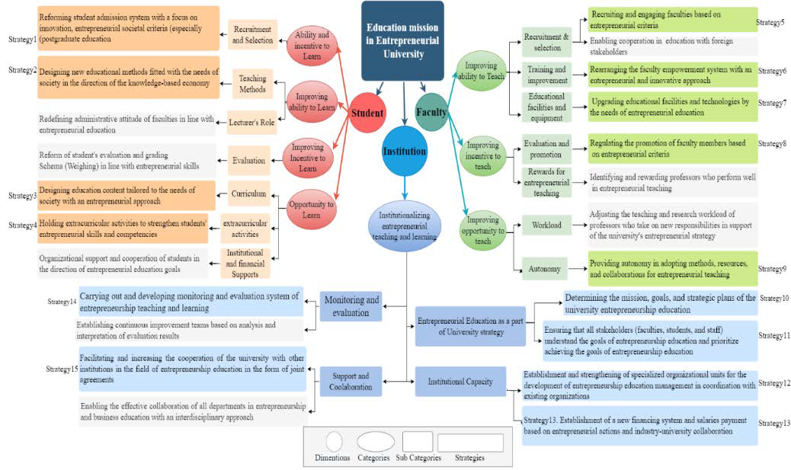
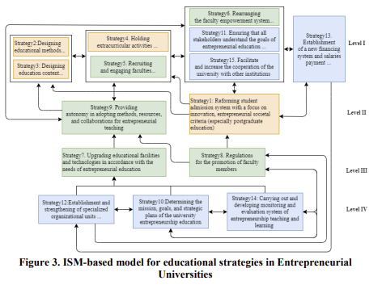

A ministry-commissioned initiative to accelerate the transition of universities toward stronger engagement with society and industry. The project produced national policy documents and a series of virtual workshops and roundtables (COVID-era) with university leadership across the country to support implementation and adoption.
This initiative was commissioned by the Ministry of Science, Research and Technology of Iran to facilitate innovation and strengthen universities’ impact on society and industry. The goal was to accelerate the shift toward a society-oriented and entrepreneurial university model by translating high-level policy vision into actionable documents and implementation support.
Given the importance of accelerating the movement of the country’s universities toward society-orientation and entrepreneurship, the Ministry of Science, Research and Technology — with its overarching policy-making mandate in the field of higher education — formulated the statement “The Future of Universities in Iran: Society-Orientation and Entrepreneurship” and officially unveiled it in June 2020. In light of the importance of promoting these concepts and developing the related implementation documents, the Ministry of Science, Research and Technology assigned this mission — through official letter No. 34689 dated January 16, 2021 — to the National Research Institute for Science Policy (NRISP).
Source: NRISP initiative page
National statement defining the strategic direction and expected transformation of universities.
Link to the documentExecutive transformation plan describing collaboration structures between universities/institutes and society/industry.
Link to the documentDuring COVID, the project ran a national series of virtual sessions where heads of universities were invited by the Ministry to participate, share ideas, and raise concerns about implementation.
Systematic review + framework synthesis + focus group (strategy identification)
Link to the articleInterpretive Structural Modeling (ISM) (strategy prioritization & dependencies)
Link to the articleThese publications are research outputs linked to the broader national policy project. They provide analytical structure (strategy frameworks and dependency modeling) to support implementation planning.

